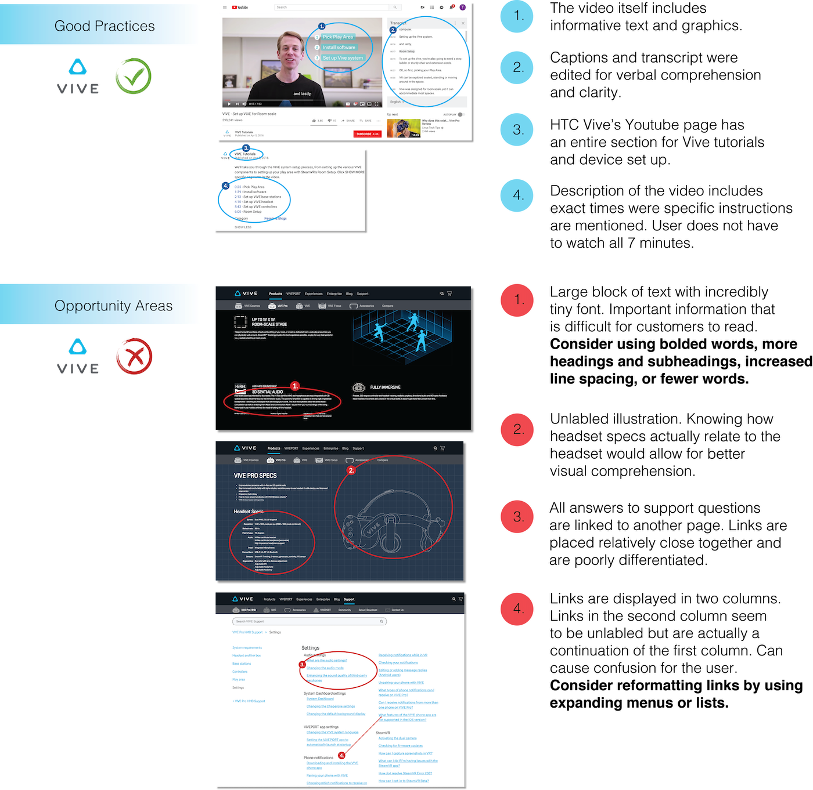

Content Strategy
Content Inventory
Content Audit
Chunking
Data Visualization
Spring 2019 UCBX
Project completed with Eric Truong, Laura Berry, Rhea Montante, Xuan Li, and Vickey Lu.
This case study was a practice in determining whether a content audit and a deeper understanding of content strategy would allow for a more informed website teardown as well as actionable and concrete suggestions for more user-centric content.
A deeper analysis was conducted on HTC Vive’s video content as well as on their product and support pages. While Vive’s videos are user-centric and accessible, text blocks on Vive’s product and support pages lack readability.
A deeper analysis was conducted on Facebook Oculus Rfit’s homepage and Rift’s video content. While chunks of text on Oculus Rift’s website were well-formated and user-centric, support and video content lack accessibility.
This case study significantly raised my awareness of how important content formatting and clarity is to human-centered and accessible design. One of the most surprising findings from this project was the way in which even video content can be chunked. In “How Chunking Helps Content Processing”, for instance, from the Nielson Norman Group, the article asserts, “You can chunk video content into individually accessible chapters or topics, to allow users to easily navigate inside the video.” Understanding how to more deeply analyze content on digital interfaces will allow me to become a more detail oriented, accessibility-minded designer.
Still curious about my design process? Read more about the HTC Vive and Facebook Oculus Rift case study here!